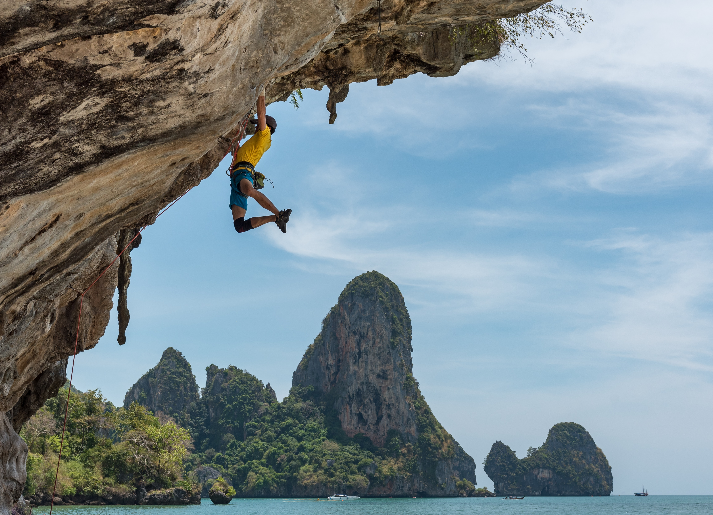

What makes climbing a great hobby?
- It's great physical exercise
- It challenges you to see from different perspectives
- It provides mental stimulation, like a large puzzle
- It can connect you to nature (if you climb outdoors)
- It can be very social (and is a great way to meet new people)
How do you start with climbing?
In places with very little outdoor climbing, like Kansas City, the best way to start climbing is to find a local climbing gym and take and introductory climbing class. These classes will teach you basic climbing techniques, ettiquette, and important safety procedures. Climbing gyms also provide a safe environment to become comfortable with climbing before moving to an outdoor crag, where there are several additional safety procedures you will need to know that are taken care of for you in an established climbing gym.